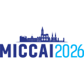
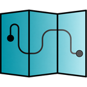
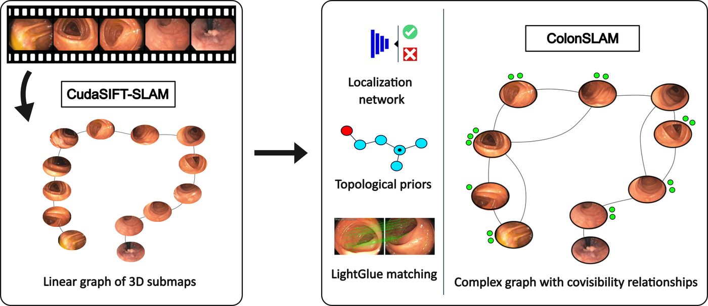
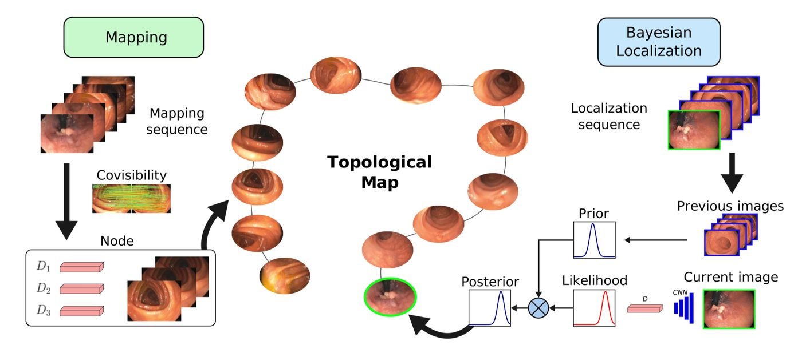
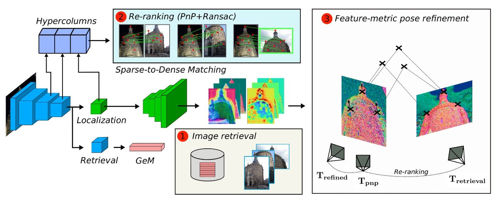
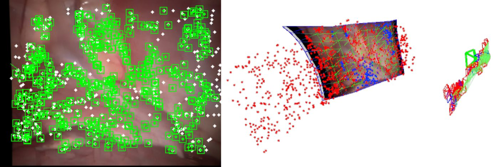
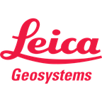

2025-present
Co-founder
EndoCartoScope · Universidad de Zaragoza
Zaragoza, Spain
Co-founder at EndoCartoScope · Universidad de Zaragoza
Building Spatial AI for endoscopy.
PhD in SLAM and visual place recognition for colonoscopy at the Robotics Lab, under J.M.M. Montiel. Research internships at Google and Leica Geosystems, both on visual-inertial SLAM.
EIC-funded · 2025-2028
EndoCartoScope
Spatial AI for medical endoscopy: we build a per-patient 3D map of the cavity while localizing the endoscope inside it, using only the video of a standard endoscope, enough to tell how much of the mucosa was inspected, guide navigation and measure lesions.

Sep 2026Organizing CLiMB at MICCAI 2026
Organizing DCA-MI at ECCV 2026

Jul 2025EndoCartoScope starts
PhD defended




2025-present
EndoCartoScope · Universidad de Zaragoza
Zaragoza, Spain
2020-2025
Universidad de Zaragoza
SLAM and visual place recognition for colonoscopy, advised by J.M.M. Montiel. Defended June 2025.
Sep-Dec 2022
Google · Zurich, Switzerland
SLAM aided by neural-network priors, in Federico Tombari's team.

Aug 2019-Feb 2020
Leica Geosystems · Switzerland
Built the Leica-UZ visual-inertial SLAM library, combining VI-ORB-SLAM and VINS-Mono.
Oct 2017-Jun 2018
Universidad de Zaragoza
Extended ORB-SLAM to non-rigid scenes.